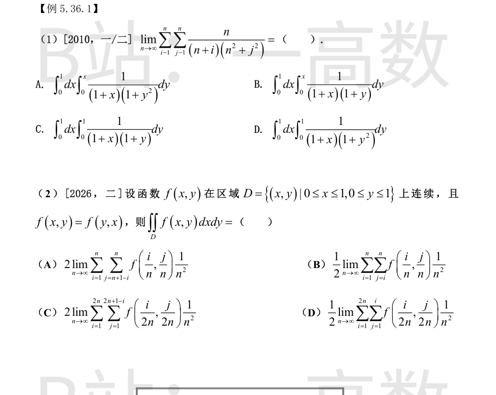
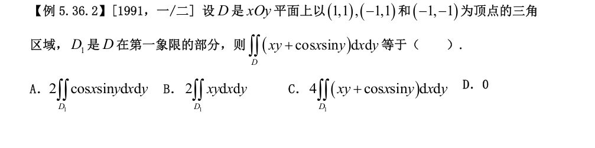
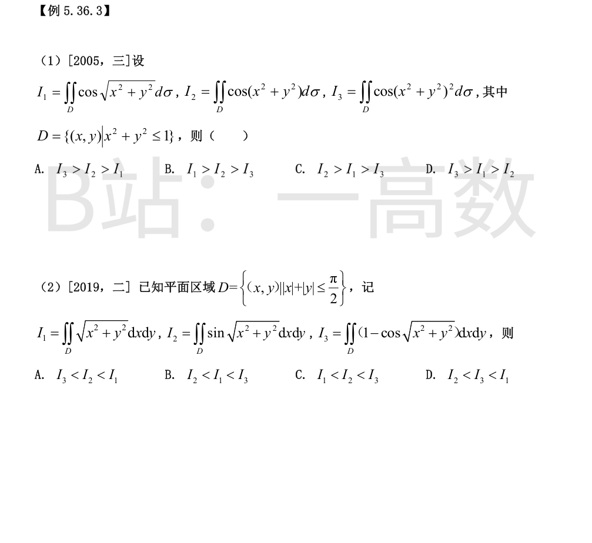
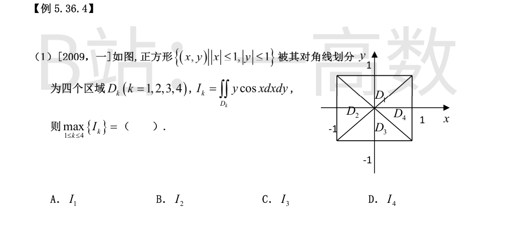

把通项凑成黎曼和：
$$\frac{n}{(n+i)(n^{2}+j^{2})}=\frac{n}{n(1+i/n)\cdot n^{2}(1+(j/n)^{2})}=\frac{1}{n^{2}}\cdot\frac{1}{\left(1+\frac{i}{n}\right)\left(1+\frac{j^{2}}{n^{2}}\right)}$$
故原式 $=\lim\limits_{n\to\infty}\dfrac{1}{n^{2}}\sum_{i=1}^{n}\sum_{j=1}^{n}f\left(\dfrac{i}{n},\dfrac{j}{n}\right)$，其中 $f(x,y)=\dfrac{1}{(1+x)(1+y^{2})}$，分割为 $[0,1]$ 上步长 $1/n$ 的方格、取点 $\left(\dfrac{i}{n},\dfrac{j}{n}\right)$（每格面积 $\dfrac{1}{n^{2}}$），由 $f$ 连续，极限为
$$\int_{0}^{1}\!dx\int_{0}^{1}\frac{1}{(1+x)(1+y^{2})}\,dy$$
对照选项，D 正确（A、B 区域上限错，C 中 $1+y$ 应为 $1+y^2$）。
用对角线把 $D$ 分成两半，由 $f(x,y)=f(y,x)$ 得
$$\iint_{D}f\,dxdy=2\iint_{T}f\,dxdy,\quad T=\{(x,y)\in D:\ y\le x\}$$
验证 (D)：取点 $\left(\dfrac{i}{2n},\dfrac{j}{2n}\right)$，网格步长 $\dfrac{1}{2n}$，每格面积 $\dfrac{1}{4n^{2}}$；求和指标 $i=1..2n,\ j=1..i$ 恰覆盖下半三角 $T$（区域面积 $\tfrac12$），且权 $\dfrac{1}{n^{2}}=4\cdot\dfrac{1}{4n^{2}}$，故
$$\lim_{n\to\infty}\sum_{i=1}^{2n}\sum_{j=1}^{i}f\left(\frac{i}{2n},\frac{j}{2n}\right)\frac{1}{n^{2}}=4\iint_{T}f\,dxdy$$
乘 $\dfrac12$ 得 $2\iint_{T}f=\iint_{D}f$。(A) 的指标 $j\ge n+1-i$ 是 $x+y\ge1$ 的三角（非对角线分半，极限为 $2\iint_{x+y\ge1}f\ne\iint_D f$）；(B) 系数应为 2 而非 $\tfrac12$（其极限为 $\tfrac12\iint_{y\ge x}f=\tfrac14\iint_D f$）；(C) 指标 $i+j\le 2n+1$ 是 $x+y\le1$ 区域且权又放大 4 倍，极限为 $8\iint_{x+y\le1}f$。故选 D。

$D=\{-1\le x\le1,\ x\le y\le1\}$，$D_1=\{0\le x\le1,\ x\le y\le1\}$。
先算 $xy$ 项：
$$\iint_{D}xy\,dxdy=\int_{-1}^{1}x\,dx\int_{x}^{1}y\,dy=\int_{-1}^{1}x\cdot\frac{1-x^{2}}{2}\,dx=\frac12\int_{-1}^{1}(x-x^{3})\,dx=0\ (奇函数)$$
再算 $\cos x\sin y$ 项：
$$\iint_{D}\cos x\sin y\,dxdy=\int_{-1}^{1}\cos x\,dx\int_{x}^{1}\sin y\,dy=\int_{-1}^{1}\cos x(\cos x-\cos 1)\,dx$$
被积函数为 $x$ 的偶函数，且 $\int_x^1\sin y\,dy$ 与 $D_1$ 上的内层积分一致，故
$$=2\int_{0}^{1}\cos x(\cos x-\cos 1)\,dx=2\iint_{D_{1}}\cos x\sin y\,dxdy$$
所以 $\displaystyle\iint_{D}(xy+\cos x\sin y)\,dxdy=2\iint_{D_{1}}\cos x\sin y\,dxdy$，选 A。

在 $D$ 上记 $r=\sqrt{x^{2}+y^{2}}\in[0,1]$，三个被积函数为 $\cos r,\ \cos r^{2},\ \cos r^{4}$。
当 $0<r<1$ 时 $r>r^{2}>r^{4}$；又 $\cos u$ 在 $[0,1]\subset[0,\tfrac{\pi}{2})$ 上严格单调递减，故
$$\cos r<\cos r^{2}<\cos r^{4}\quad(0<r<1)$$
不等式在正面积集合上严格成立，积分保持严格不等：$I_1<I_2<I_3$，即 $I_3>I_2>I_1$，选 A。
记 $r=\sqrt{x^{2}+y^{2}}$。在 $D$ 上 $r\le\dfrac{\pi}{2}$（顶点 $(\tfrac{\pi}{2},0)$ 等处取到最大值）。只需在 $[0,\tfrac{\pi}{2}]$ 上比较 $u,\ \sin u,\ 1-\cos u$：
① $\sin u<u$（$u>0$）；
② $1-\cos u=2\sin^{2}\dfrac{u}{2}\le\dfrac{u^{2}}{2}<u$（因 $u<2$），故 $I_3<I_1$；
③ 比较 $\sin u$ 与 $1-\cos u$：令 $h(u)=\sin u+\cos u-1=\sqrt2\sin\left(u+\tfrac{\pi}{4}\right)-1$，当 $u\in(0,\tfrac{\pi}{2})$ 时 $u+\tfrac{\pi}{4}\in(\tfrac{\pi}{4},\tfrac{3\pi}{4})$，$\sin>\tfrac{\sqrt2}{2}$，故 $h(u)>0$，即 $\sin u>1-\cos u$，故 $I_3<I_2$。
综上 $I_3<I_2<I_1$，选 A。

因 $|x|\le1<\tfrac{\pi}{2}$，被积函数中 $\cos x>0$。
$D_1$（上）与 $D_3$（下）关于 $x$ 轴对称，$y\cos x$ 关于 $y$ 为奇函数，故 $I_3=-I_1$；
$D_2$（左）与 $D_4$（右）关于 $y$ 轴对称，$\cos x$ 为偶函数，故 $I_2=I_4$。具体计算：$D_2=\{-1\le x\le0,\ x\le y\le -x\}$，
$$I_2=\int_{-1}^{0}\cos x\,dx\int_{x}^{-x}y\,dy=\int_{-1}^{0}\cos x\cdot\frac{x^{2}-x^{2}}{2}\,dx=0$$
故 $I_2=I_4=0$。
$D_1=\{0\le y\le1,\ -y\le x\le y\}$：
$$I_1=\int_{0}^{1}y\,dy\int_{-y}^{y}\cos x\,dx=\int_{0}^{1}2y\sin y\,dy>0$$
故 $\max=I_1>0=I_2=I_4>-I_1=I_3$，选 A。